3 Dynamics
Newton’s laws, forces and momentum
Learning objectives
By the end of this chapter, you should be able to draw and interpret free-body diagrams, apply all three Newton’s laws, calculate resultant force from the rate of change of momentum, explain terminal velocity, and solve one-dimensional momentum-conservation problems.
Force, mass and acceleration
\[F=\frac{\Delta p}{\Delta t}=ma\] \[p=mv\] \[J=F\Delta t=\Delta p\]
Mass is a measure of inertia: the greater the mass, the more difficult it is to change an object’s velocity. Weight is the gravitational force on an object, so \(W=mg\). Mass is constant for an object, whereas weight changes if the gravitational field strength changes.
A free-body diagram contains only forces acting on the chosen object. Typical forces are weight, normal contact force, tension, friction, drag, upthrust and an applied driving force. Resolve forces into components only after choosing axes, usually parallel and perpendicular to the motion or surface.
Newton’s laws and terminal velocity
- First law: an object remains at rest or moves with constant velocity in a straight line unless a resultant external force acts on it.
- Second law: the resultant force equals the rate of change of momentum and acts in that direction. For constant mass, \(F=ma\).
- Third law: when body A exerts a force on body B, body B exerts an equal-magnitude, opposite-direction force of the same type on body A. The two forces act on different objects and must never be cancelled on a single free-body diagram.
- For a falling object, weight is approximately constant. Drag increases as speed increases, so the resultant downward force and acceleration decrease. At terminal velocity, drag equals weight; the resultant force and acceleration are zero, but the velocity is not zero.
Momentum, impulse and conservation
Momentum is a vector quantity, so a sign convention is essential. Impulse is the product of force and contact time, and it equals the change in momentum. On a force-time graph, the area under the graph is impulse.
If a system has no external resultant force:
\[\sum p_{\text{before}}=\sum p_{\text{after}}.\]
In collision and explosion questions, write the momentum of every object before and after the interaction. Use signed velocities in one dimension. Kinetic energy is not necessarily conserved: it is conserved only in an elastic collision.
Problem-solving checklist
- Define the system and choose a positive direction.
- Draw a free-body diagram or list the momenta before and after the event.
- State the physical principle: \(F=ma\), \(F=\Delta p/\Delta t\), or momentum conservation.
- Substitute SI units, keep signs throughout, and check whether the direction and magnitude are physically reasonable.
Multiple Choice
Example 1 · 3.1 MC Easy Q1
A cyclist is riding at a steady speed on a level road. According to Newton’s third law of motion, what is equal and opposite to the backward push of the back wheel on the road?
Example 2 · 3.1 MC Easy Q2
A resultant force causes a body to accelerate. What is equal to the resultant force?
Example 3 · 3.1 MC Easy Q3
What is meant by the mass and by the weight of an object on the Earth?
Example 4 · 3.1 MC Easy Q4
An object travelling with velocity \(v\) strikes a wall and rebounds as shown.
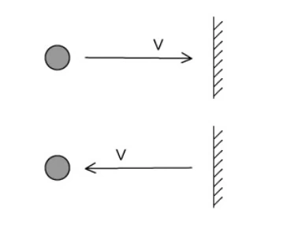
Which property of the object is not conserved?
Example 5 · 3.1 MC Easy Q9
A box rests on a horizontal, rough surface. A string attached to the box passes over a smooth pulley and supports a mass at its other end.
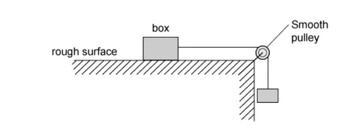
When the box is released, what forces are acting on it?
Example 6 · 3.1 MC Medium Q1
A car has a horizontal driving force of \(2.0\ \mathrm{kN}\) acting on it and a resistive force a quarter of this size. It has a forward horizontal acceleration of \(2.0\ \mathrm{m\,s^{-2}}\). What is the mass of the car?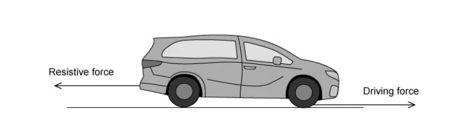
Example 7 · 3.1 MC Medium Q2
All external forces on a body cancel out. Which statement must be correct?
Example 8 · 3.1 MC Medium Q3
A stone of mass \(m\) is dropped from a tall building. There is significant air resistance. The acceleration of free fall is \(g\). When the stone reaches terminal velocity, which information is correct?
Example 9 · 3.1 MC Medium Q5
A wooden block rests on a rough board. The end of the board is then raised until the block slides down the plane at constant velocity \(v\). Which row describes the forces acting on the block?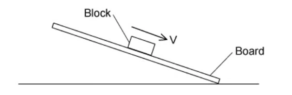
Example 10 · 3.1 MC Medium Q7
A block of mass \(1.20\ \mathrm{kg}\) is on a rough horizontal surface. A force of \(12\ \mathrm{N}\) is applied to the block and it accelerates at \(4.0\ \mathrm{m\,s^{-2}}\). What is the magnitude of the frictional force acting on the block?
Example 11 · 3.2 MC Easy Q1
What is the principle of conservation of momentum?
Example 12 · 3.1 MC Hard Q1
A box of mass \(10.0\ \mathrm{kg}\) rests on a horizontal rough surface. A string attached to the box passes over a smooth pulley and supports a \(4.0\ \mathrm{kg}\) mass at its other end. When the box is released, a frictional force of \(12.0\ \mathrm{N}\) acts on it.
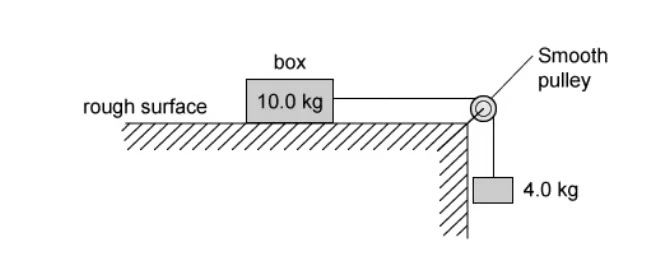
What is the acceleration of the box?
Example 13 · 3.2 MC Easy Q4
Which row correctly states whether momentum and kinetic energy are conserved in an inelastic collision with no external forces?
Example 14 · 3.2 MC Easy Q5
Which quantity has the same base units as momentum?
Example 15 · 3.1 MC Hard Q2
A lift consists of a passenger car supported by a cable which runs over a light, frictionless pulley to a balancing weight. The balancing weight falls as the passenger car rises. The passenger car, balancing weight and passenger have masses \(1200\ \mathrm{kg}\), \(1320\ \mathrm{kg}\) and \(80\ \mathrm{kg}\) respectively.
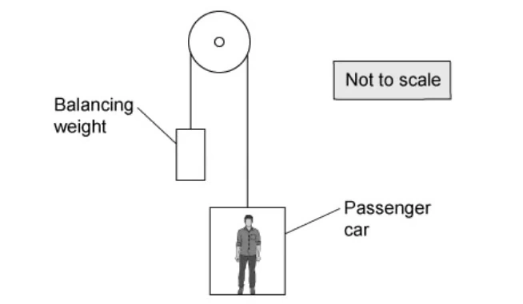
What is the magnitude of the acceleration of the car when carrying just one passenger and when the pulley is free to rotate?
Example 16 · 3.2 MC Easy Q7
Two similar spheres, each of mass \(m\) and speed \(v\), move towards each other and have a head-on elastic collision. Which statement is correct?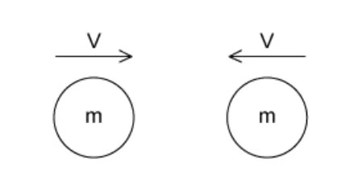
Example 17 · 3.2 MC Easy Q8
Trolley X collides with stationary trolley Y on a frictionless track. They become attached and move off together. Which statement is correct?
Example 18 · 3.2 MC Easy Q9
A car accelerates from rest. The graph shows the momentum of the car plotted against time.
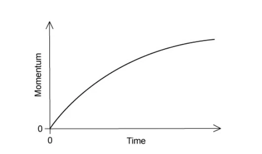
What is the meaning of the gradient of the graph at a particular time?
Example 19 · 3.2 MC Medium Q2
Two spheres approach each other along the same straight line with speeds \(u_1\) and \(u_2\). After a perfectly elastic collision their speeds are \(v_1\) and \(v_2\) in the opposite separating directions. Which equation is correct?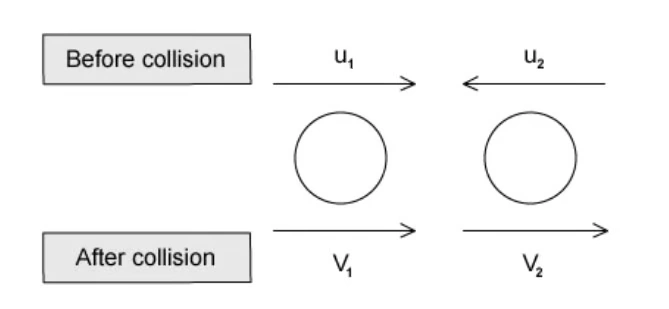
Example 20 · 3.2 MC Medium Q3
A lorry of mass \(18\) tonnes travels at \(25.0\ \mathrm{m\,s^{-1}}\). A car of mass \(800\ \mathrm{kg}\) travels at \(40.0\ \mathrm{m\,s^{-1}}\) towards the lorry. What is the magnitude of the total momentum?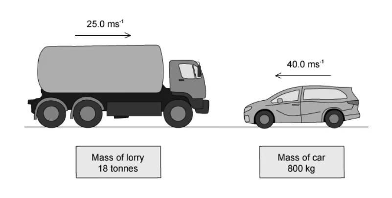
Example 21 · 3.2 MC Medium Q5
A cannon of mass \(1600\ \mathrm{kg}\) fires a cannon ball of mass \(20\ \mathrm{kg}\). The recoil velocity of the cannon is \(5\ \mathrm{m\,s^{-1}}\) horizontally. What is the horizontal velocity of the cannon ball?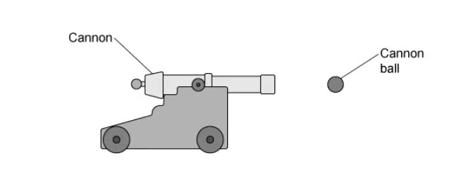
Example 22 · 3.2 MC Medium Q7
A molecule of mass \(m\) travelling at speed \(v\) hits a wall perpendicularly. The collision is elastic. What are the changes in momentum and kinetic energy?
Example 23 · 3.2 MC Medium Q8
A moving object strikes a stationary object in an inelastic collision and the objects move off together. Which values are possible for total momentum and total kinetic energy before and after?
Example 24 · 3.2 MC Medium Q10
Two train carriages, each of mass \(7500\ \mathrm{kg}\), travel towards each other at \(3.00\ \mathrm{m\,s^{-1}}\) and \(1.50\ \mathrm{m\,s^{-1}}\). They collide and join together. What kinetic energy is lost?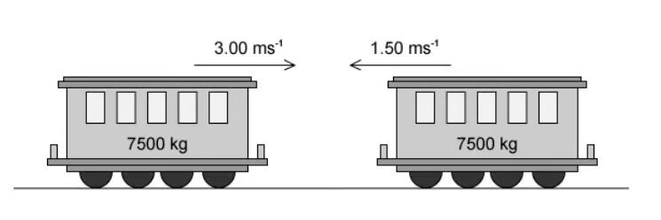
Example 25 · 3.2 MC Hard Q1
A \(10.0\ \mathrm{g}\) bullet is fired vertically upwards at \(200\ \mathrm{m\,s^{-1}}\) into a stationary \(150\ \mathrm{g}\) wooden block supported \(4.0\ \mathrm{m}\) above the ground. The bullet embeds in the block. How far above the ground is the block at maximum height?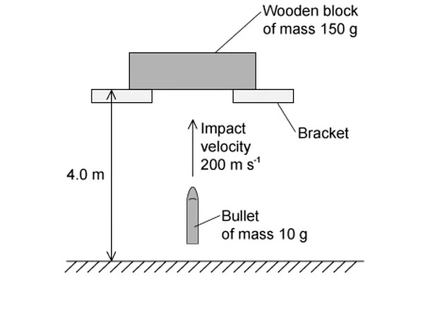
Example 26 · 3.2 MC Hard Q2
Two railway trucks of masses \(m\) and \(5m\) move towards each other with speeds \(3u\) and \(u\) respectively. They collide and stick together. What is their speed after the collision?
Example 27 · 3.2 MC Hard Q3
Sand falls vertically onto a conveyor belt at a rate of \(m\ \mathrm{kg\,s^{-1}}\). What horizontal force is required to keep the belt moving at constant speed \(v\)?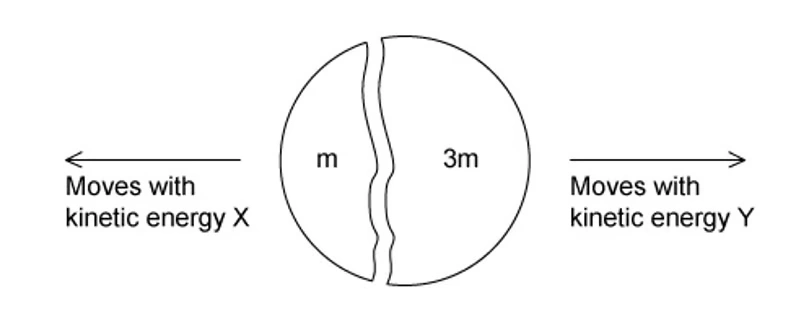
Example 28 · 3.2 MC Hard Q6
A stationary nucleus has nucleon number \(A\). It emits a proton with speed \(v\) and forms a new nucleus with speed \(u\) in the opposite direction. Which equation gives \(v\)?
Example 29 · 3.2 MC Hard Q7
Particle X with speed \(v\) collides perfectly elastically with a stationary identical particle Y. What happens after the collision?
Example 30 · 3.2 MC Hard Q10
A body initially at rest explodes into masses \(M_1\) and \(M_2\) moving apart with speeds \(v_1\) and \(v_2\). What is \(v_1/v_2\)?
Structured Questions
Easy · 5 questions
Example 1 · Brick and Newton’s laws · 3.1 SQ Easy Q1
A brick of mass \(2\ \mathrm{kg}\) is resting on the floor.
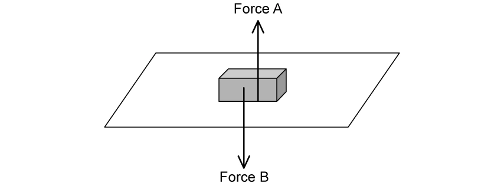
(a) (i) Define equilibrium. (ii) State the names of the upward force A and downward force B acting on the brick. [2 marks]
(b) (i) State Newton’s first law of motion. (ii) Explain how Newton’s first law applies to the brick. [3 marks]
(c) (i) State Newton’s third law of motion. (ii) Explain how Newton’s third law can be applied to one of the forces acting on the brick. [4 marks]
(d) The surface is raised at one end to form a slope. This causes the brick to accelerate at a constant rate of \(0.25\ \mathrm{m\,s^{-2}}\). (i) State Newton’s second law of motion. (ii) Determine the magnitude of the resultant force on the brick. [3 marks]
Show mark scheme / model answer
(a)
- Equilibrium means that the resultant force is zero.
[1] - A is the normal contact force; B is the weight of the brick.
[1]
(b)
- Newton’s first law: a body remains at rest or moves with constant velocity unless acted on by a resultant external force.
[1] - The brick is stationary because the upward and downward forces are equal, so the resultant force is zero.
[2]
(c)
- Newton’s third law: when body A exerts a force on body B, B exerts an equal and opposite force of the same type on A.
[1] - Valid pair: the floor pushes upward on the brick and the brick pushes downward on the floor with equal magnitude.
[3]
(d)
- Newton’s second law: the resultant force equals the rate of change of momentum; for constant mass, \(F=ma\).
[1] - \(F=2.0\times0.25=0.50\ \mathrm{N}\).
[2]
Example 2 · Skydiver and terminal velocity · 3.1 SQ Easy Q2
A skydiver of mass \(75\ \mathrm{kg}\) jumps from an aircraft.
(a) (i) State the difference between mass and weight. (ii) Calculate the weight of the skydiver. [4 marks]
(b) A velocity-time graph shows the first \(40\ \mathrm{s}\) of the fall: velocity increases rapidly from \(0\) to \(5\ \mathrm{s}\), increases at a decreasing rate from \(5\) to \(25\ \mathrm{s}\), and is constant from \(25\) to \(40\ \mathrm{s}\). Explain each section. [6 marks]
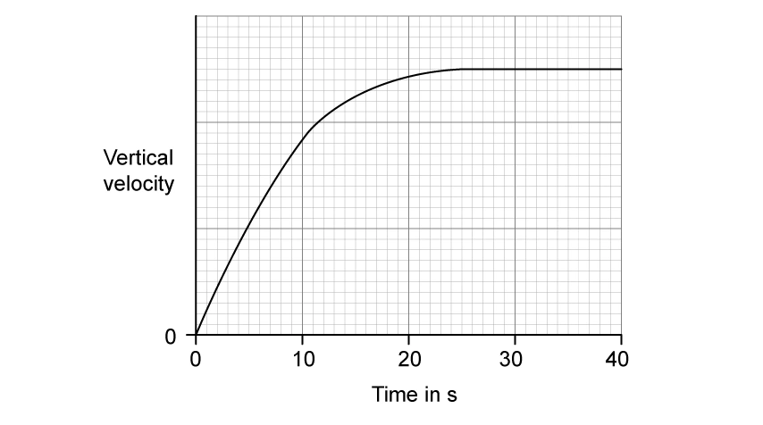
(c) The skydiver is falling at constant velocity. State and label the forces acting on the skydiver. [3 marks]
(d) The parachute opens after \(40\ \mathrm{s}\). Sketch and describe how vertical velocity changes until a new, lower terminal velocity is reached. [2 marks]
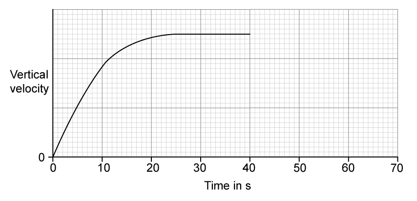
Show mark scheme / model answer
(a)
- Mass is a measure of inertia; weight is the gravitational force on the skydiver.
[2] - \(W=mg=75\times9.81=735.75\ \mathrm{N}\approx740\ \mathrm{N}\).
[2]
(b)
- \(0\)-\(5\ \mathrm{s}\): air resistance is initially negligible, so the resultant force is approximately the weight and acceleration is close to \(g\).
[2] - \(5\)-\(25\ \mathrm{s}\): speed and air resistance increase, so resultant force and acceleration decrease.
[2] - \(25\)-\(40\ \mathrm{s}\): air resistance equals weight; resultant force and acceleration are zero, so velocity is constant.
[2]
(c)
- Weight acts downward and air resistance acts upward.
[2] - At terminal velocity the arrows should be equal in length.
[1]
(d)
- Opening the parachute makes air resistance greater than weight, producing an upward resultant force.
[1] - Downward velocity decreases along a smooth curve and reaches a lower terminal velocity.
[1]
Example 3 · Hot-air balloon · 3.1 SQ Easy Q3
A hot-air balloon is tied to the ground by two ropes. Each rope has tension \(400\ \mathrm{N}\). The ropes are untied and the balloon starts to move upwards. The balloon and its contents have a total mass of \(1500\ \mathrm{kg}\).
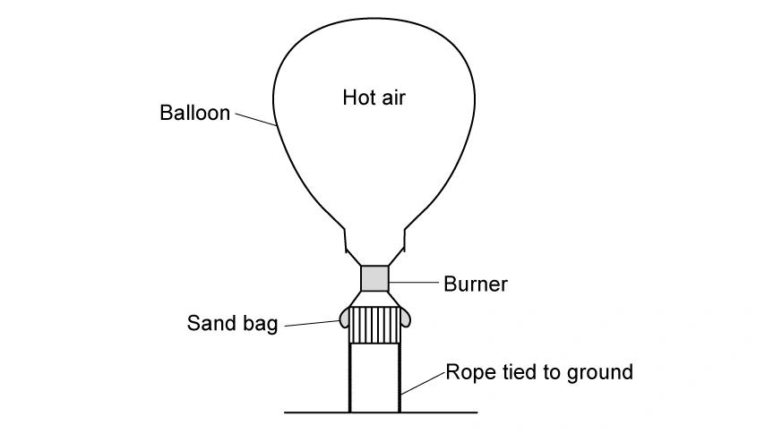
(a) State and label the forces acting on the tied balloon. [3 marks]
(b) Calculate (i) the weight of the balloon and (ii) the resultant force immediately after the ropes are untied. [4 marks]
(c) (i) Calculate the initial acceleration. (ii) Explain how the upward acceleration changes during the first few seconds. [5 marks]
(d) Passengers release sand from the bags. State and explain how this affects the upward acceleration. [2 marks]
Show mark scheme / model answer
(a)
- Upthrust acts upward.
[1] - Weight and the two rope tensions act downward.
[2]
(b)
- \(W=1500\times9.81=14\,715\ \mathrm{N}\approx14\,700\ \mathrm{N}\).
[2] - While tied, upthrust \(=W+2T=14\,700+800=15\,500\ \mathrm{N}\).
[1] - Immediately after release, resultant force \(=15\,500-14\,700=800\ \mathrm{N}\) upward.
[1]
(c)
- \(a=F/m=800/1500=0.53\ \mathrm{m\,s^{-2}}\).
[2] - As the balloon speeds up, downward drag increases.
[1] - The upward resultant force and acceleration therefore decrease.
[2]
(d)
- Releasing sand reduces mass and weight while upthrust is initially unchanged.
[1] - The upward resultant force per unit mass increases, so upward acceleration increases.
[1]
Example 4 · Air rifle and impulse · 3.2 SQ Easy Q1
(a) State the principle of conservation of linear momentum. [2 marks]
(b) A pellet of mass \(20\ \mathrm{g}\) is fired from an air rifle with momentum \(1.2\ \mathrm{kg\,m\,s^{-1}}\). Calculate its velocity. [2 marks]
(c) State (i) the total momentum of rifle and pellet and (ii) the recoil momentum of the rifle. [2 marks]
(d) The pellet embeds in a target and takes \(0.0025\ \mathrm{s}\) to stop. (i) State the relation between force and momentum. (ii) Calculate the average force required. [4 marks]
Show mark scheme / model answer
(a)
- Total momentum of a system remains constant provided no resultant external force acts.
[2]
(b)
- Convert \(20\ \mathrm{g}\) to \(0.020\ \mathrm{kg}\).
[1] - \(v=p/m=1.2/0.020=60\ \mathrm{m\,s^{-1}}\).
[1]
(c)
- Total momentum of rifle and pellet is initially and finally zero.
[1] - Rifle recoil momentum \(=-1.2\ \mathrm{kg\,m\,s^{-1}}\).
[1]
(d)
- \(F=\Delta p/\Delta t\).
[1] - \(\Delta p=1.2\ \mathrm{kg\,m\,s^{-1}}\).
[1] - \(F=1.2/0.0025=480\ \mathrm{N}\).
[2]
Example 5 · Trolley collision · 3.2 SQ Easy Q2
(a) For elastic and inelastic collisions, state whether momentum, total energy and kinetic energy are conserved. [3 marks]
(b) Trolley X, mass \(400\ \mathrm{g}\), moves at \(1.2\ \mathrm{m\,s^{-1}}\) towards stationary trolley Y, mass \(800\ \mathrm{g}\). Calculate the initial momentum of X and state the combined momentum after they collide and stick together. [3 marks]
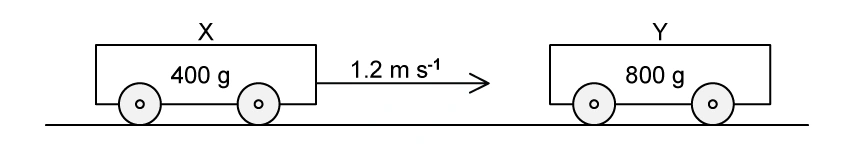
(c) Calculate the velocity and direction of the joined trolleys. [4 marks]
(d) Explain why the collision is not elastic. [1 mark]
Show mark scheme / model answer
(a)
- Momentum and total energy are conserved in both elastic and inelastic collisions.
[2] - Kinetic energy is conserved only in an elastic collision.
[1]
(b)
- \(p_X=0.400\times1.2=0.48\ \mathrm{kg\,m\,s^{-1}}\).
[2] - Combined momentum after impact is also \(0.48\ \mathrm{kg\,m\,s^{-1}}\).
[1]
(c)
- Combined mass \(=0.400+0.800=1.20\ \mathrm{kg}\).
[1] - \(v=0.48/1.20=0.40\ \mathrm{m\,s^{-1}}\).
[2] - Direction: the original direction of trolley X.
[1]
(d)
- The trolleys stick together and kinetic energy decreases, so the collision is not elastic.
[1]
Medium · 6 questions
Example 6 · Block pulled up a slope · 3.1 SQ Medium Q1
A \(250\ \mathrm{kg}\) stone block is pulled up a \(17^\circ\) slope at constant speed by a cable with tension \(1.2\ \mathrm{kN}\).
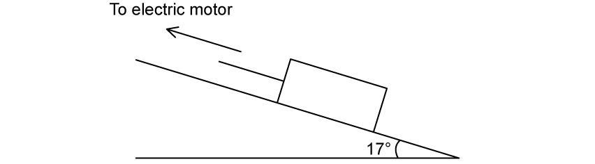
(a) Draw and label all forces acting on the block. [4 marks]
(b) Discuss whether the block is in equilibrium. [2 marks]
(c) Calculate the constant total resistive force \(R\). [4 marks]
(d) The cable breaks abruptly. Calculate the acceleration of the block. [3 marks]
Show mark scheme / model answer
(a)
- Tension acts up the slope.
[1] - Resistance acts down the slope.
[1] - Weight acts vertically downward and the normal reaction acts perpendicular to the slope.
[2]
(b)
- The block moves at constant velocity, so acceleration and resultant force are zero.
[1] - It is therefore in translational equilibrium even though it is moving.
[1]
(c)
- Resolve weight down the slope: \(mg\sin17^\circ\).
[1] - \(R=T-mg\sin17^\circ=1200-250(9.81)\sin17^\circ\).
[2] - \(R\approx483\ \mathrm{N}\).
[1]
(d)
- Immediately after the cable breaks, \(F=mg\sin17^\circ+R\).
[1] - \(a=F/m\approx4.8\ \mathrm{m\,s^{-2}}\) down the slope.
[2]
Example 7 · Apparent weight in an elevator · 3.1 SQ Medium Q2
A \(65\ \mathrm{kg}\) man stands in an elevator. The elevator accelerates uniformly to \(2.5\ \mathrm{m\,s^{-1}}\) in \(1.8\ \mathrm{s}\), travels at constant velocity, then decelerates uniformly for \(1.8\ \mathrm{s}\).
(a) Calculate the reaction force on the man while an upward-moving elevator comes to rest. [4 marks]
(b) Calculate the reaction force while a downward-moving elevator comes to rest. [3 marks]
(c) Explain which direction of travel makes the man feel (i) lighter and (ii) heavier during deceleration. [4 marks]
(d) The cable snaps and the elevator falls freely. Explain using laws of motion why the man feels weightless. [3 marks]
Show mark scheme / model answer
Common calculation
- \(a=\Delta v/\Delta t=2.5/1.8=1.39\ \mathrm{m\,s^{-2}}\).
(a)
- While an upward-moving lift stops, acceleration is downward.
[1] - \(R=m(g-a)=65(9.81-1.39)\approx547\ \mathrm{N}\).
[3]
(b)
- While a downward-moving lift stops, acceleration is upward.
[1] - \(R=m(g+a)=65(9.81+1.39)\approx728\ \mathrm{N}\).
[2]
(c)
- The man feels lighter when the reaction is less than his weight: upward travel while decelerating.
[2] - He feels heavier when the reaction exceeds his weight: downward travel while decelerating.
[2]
(d)
- In free fall both the man and elevator accelerate downward at \(g\).
[1] - The man does not press on the floor, so the normal reaction is zero.
[2]
Example 8 · Newton’s third law and colliding blocks · 3.1 SQ Medium Q3
(a) For a Newton’s third-law pair, describe one similarity and one difference. [2 marks]
(b) Blocks A and B of masses \(3.0\ \mathrm{kg}\) and \(7.0\ \mathrm{kg}\) are connected on a frictionless table. A horizontal \(200\ \mathrm{N}\) force acts on B. Identify the third-law pairs involving B and calculate the acceleration. [7 marks]
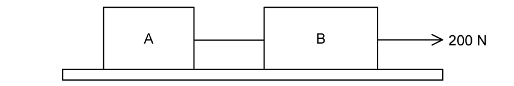
(c) The string is removed. A approaches stationary B at \(0.20\ \mathrm{m\,s^{-1}}\). From \(t=80\) to \(100\ \mathrm{ms}\), state how the magnitude of B’s acceleration changes. From \(t=100\) to \(120\ \mathrm{ms}\), state the magnitude of B’s acceleration. [2 marks]
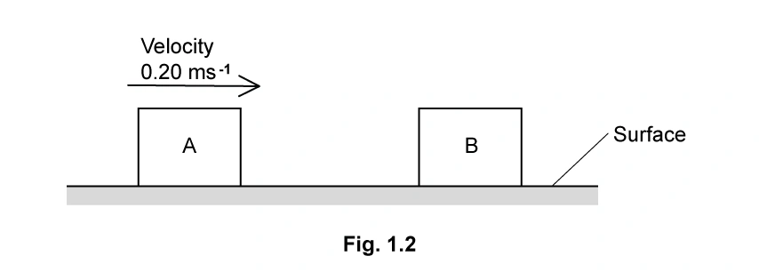
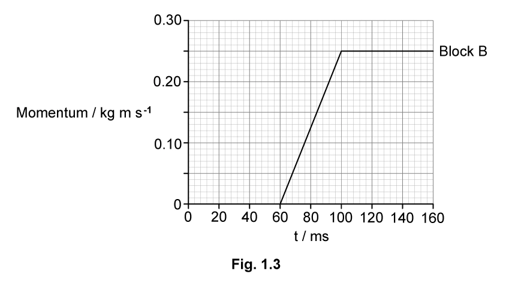
(d) Use the graph to determine contact time, average force and A’s speed after collision. [6 marks]
Show mark scheme / model answer
(a)
- Similarity: equal magnitude or same type of force.
[1] - Difference: opposite directions or acting on different bodies.
[1]
(b)
- Valid pairs involving B include: table on B / B on table; Earth on B / B on Earth; string on B / B on string; external body on B / B on external body.
[4] - For A: \(T=3a\); for B: \(200-T=7a\).
[2] - Hence \(a=20\ \mathrm{m\,s^{-2}}\).
[1]
(c)
- From \(80\) to \(100\ \mathrm{ms}\), graph gradient and acceleration are constant.
[1] - From \(100\) to \(120\ \mathrm{ms}\), gradient and acceleration are zero.
[1]
(d)
- Contact time \(=100-60=40\ \mathrm{ms}\).
[1] - \(F=\Delta p/\Delta t=0.25/(40\times10^{-3})=6.25\ \mathrm{N}\).
[2] - \(p_A\) after \(=3(0.20)-0.25=0.35\ \mathrm{kg\,m\,s^{-1}}\).
[2] - \(v_A=0.35/3=0.12\ \mathrm{m\,s^{-1}}\).
[1]
Example 9 · Falling ball and drag · 3.1 SQ Medium Q4
A hollow ball of mass \(1.5\times10^{-2}\ \mathrm{kg}\) is dropped from rest and reaches terminal velocity. Upthrust is negligible.
(a) Explain why acceleration (i) decreases with time and (ii) is initially \(9.8\ \mathrm{m\,s^{-2}}\). [3 marks]
(b) A velocity-time graph is used to determine acceleration at \(t=0.25\ \mathrm{s}\). Explain how to obtain the acceleration and calculate the resultant force from it. [5 marks]
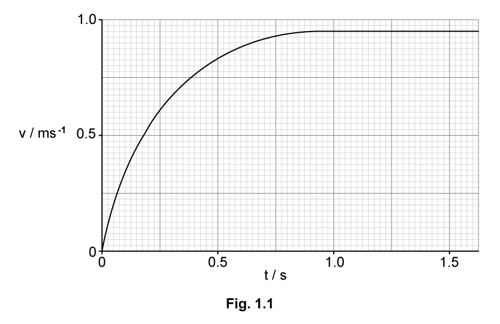
(c) Calculate the drag force on the falling ball at \(t=0.25\ \mathrm{s}\). [3 marks]
Show mark scheme / model answer
(a)
- As speed increases, drag increases, so resultant force and acceleration decrease.
[2] - Initially speed and drag are zero; weight is the only force, so \(a=g=9.8\ \mathrm{m\,s^{-2}}\).
[1]
(b)
- Draw a tangent to the curve at \(t=0.25\ \mathrm{s}\).
[1] - Calculate its gradient; the model answer gives about \(1.15\ \mathrm{m\,s^{-2}}\).
[2] - \(F=ma=0.015\times1.15\approx0.017\ \mathrm{N}\); accepted range \(0.017\)-\(0.021\ \mathrm{N}\).
[2]
(c)
- Weight \(=0.015\times9.81=0.147\ \mathrm{N}\).
[1] - Since \(F=W-D\), drag \(D=0.147-0.018\approx0.13\ \mathrm{N}\).
[2]
Example 10 · Elastic and inelastic sphere collisions · 3.2 SQ Medium Q1
Ball X of mass \(140\ \mathrm{g}\) collides head-on with stationary ball Y of mass \(620\ \mathrm{g}\). X stops and Y moves in X’s original direction at \(0.8\ \mathrm{m\,s^{-1}}\).
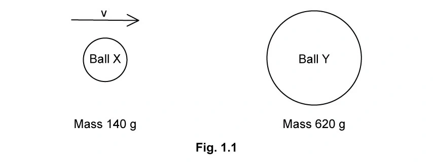
(a) Determine X’s initial velocity. [3 marks]
(b) Show and explain why this collision is inelastic. [4 marks]
(c) An aluminium sphere of mass \(2.7\ \mathrm{kg}\) moving at \(10.0\ \mathrm{m\,s^{-1}}\) collides with a stationary \(7.9\ \mathrm{kg}\) steel sphere. The steel sphere moves at \(5.1\ \mathrm{m\,s^{-1}}\). Calculate the aluminium sphere’s final velocity. [3 marks]
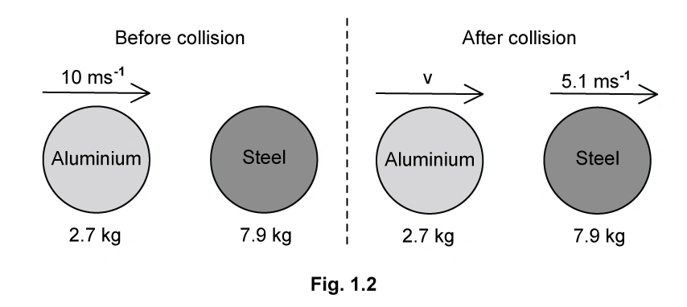
(d) Verify that the collision in (c) is elastic. [3 marks]
Show mark scheme / model answer
(a)
- Momentum conservation: \(0.140v=0.620(0.8)\).
[2] - \(v=3.54\ \mathrm{m\,s^{-1}}\approx3.5\ \mathrm{m\,s^{-1}}\).
[1]
(b)
- Initial kinetic energy \(=0.86\ \mathrm{J}\).
[1] - Final kinetic energy \(=0.20\ \mathrm{J}\).
[1] - Kinetic energy decreases, so the collision is inelastic and energy is transferred to heat/sound.
[2]
(c)
- \(2.7(10.0)=2.7v+7.9(5.1)\).
[2] - \(v=-4.9\ \mathrm{m\,s^{-1}}\); the negative sign means the aluminium sphere reverses direction.
[1]
(d)
- Total KE before \(=135\ \mathrm{J}\).
[1] - Total KE after \(\approx135\ \mathrm{J}\).
[1] - Since kinetic energy is conserved, the collision is elastic.
[1]
Example 11 · Two identical colliding blocks · 3.2 SQ Medium Q2
Two identical \(400\ \mathrm{g}\) blocks approach each other at \(0.36\ \mathrm{m\,s^{-1}}\). They reverse direction at equal speeds; \(33\%\) of their kinetic energy is transferred to the surroundings.
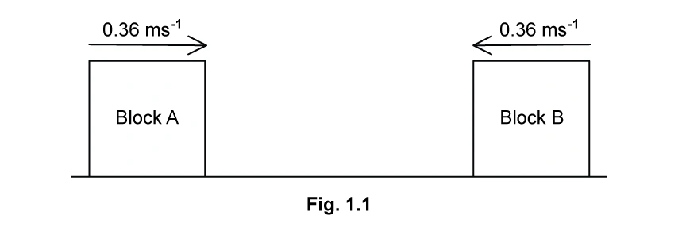
(a) State the total initial momentum and whether the collision is elastic. [3 marks]
(b) Calculate the final speed of the blocks. [3 marks]
(c) Contact lasts \(750\ \mathrm{ms}\). Determine the average force exerted by one block on the other. [3 marks]
(d) The blocks instead approach at \(0.6\) and \(0.4\ \mathrm{m\,s^{-1}}\) and stick together. Determine their combined speed and direction. [4 marks]
Show mark scheme / model answer
(a)
- Initial total momentum is zero because the equal momenta are opposite.
[1] - The collision is inelastic because \(33\%\) of kinetic energy is transferred to the surroundings.
[2]
(b)
- The source uses \(66\%\) of the initial kinetic energy remaining.
[1] - \(v=0.36\sqrt{0.66}=0.292\ \mathrm{m\,s^{-1}}\approx0.29\ \mathrm{m\,s^{-1}}\).
[2]
(c)
- For one block, \(\Delta v=0.36-(-0.29)=0.65\ \mathrm{m\,s^{-1}}\).
[1] - \(F=m\Delta v/\Delta t=0.4(0.65)/0.750=0.35\ \mathrm{N}\).
[2]
(d)
- Momentum conservation for equal masses gives \(v=(0.6-0.4)/2\).
[2] - \(v=0.10\ \mathrm{m\,s^{-1}}\) in A’s initial direction.
[2]
Hard · 4 questions
Example 12 · Apparent weight during a lift journey · 3.1 SQ Hard Q1
A person stands on scales in a lift. The scales read \(700\ \mathrm{N}\) while stationary. The lift accelerates upward, moves at constant speed, then decelerates to rest. Acceleration magnitude is \(0.7\ \mathrm{m\,s^{-2}}\) and total height is \(24\ \mathrm{m}\).
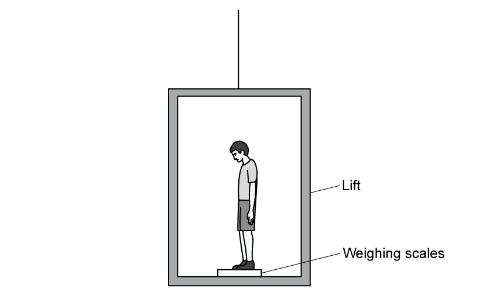
(a) Draw free-body diagrams and derive expressions for apparent weight during acceleration and deceleration. [4 marks]
(b) Determine the scale readings during acceleration and deceleration. [3 marks]
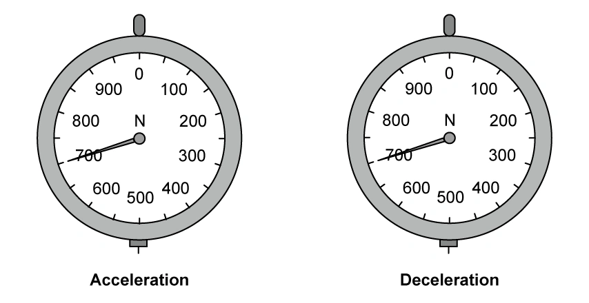
(c) Use the acceleration-time journey information to determine the journey time. [2 marks]
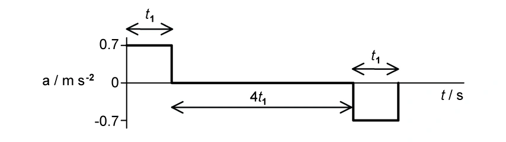
(d) Sketch apparent weight against time, including values. [3 marks]
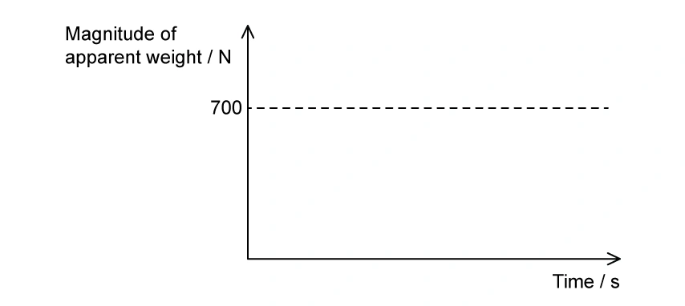
Show mark scheme / model answer
(a)
- During upward acceleration: \(R-mg=ma\), so \(R=mg+ma\).
[2] - During upward deceleration: \(mg-R=ma\), so \(R=mg-ma\).
[2]
(b)
- Person’s mass \(=700/9.81\ \mathrm{kg}\) and \(ma\approx50\ \mathrm{N}\).
[1] - Acceleration reading \(=700+50=750\ \mathrm{N}\).
[1] - Deceleration reading \(=700-50=650\ \mathrm{N}\).
[1]
(c)
- Distance equation: \(4.2t_1^2=24\).
[1] - \(t_1=2.4\ \mathrm{s}\); complete journey time \(=6t_1=14.4\ \mathrm{s}\).
[1]
(d)
- \(750\ \mathrm{N}\) for the first \(2.4\ \mathrm{s}\).
[1] - \(700\ \mathrm{N}\) for the next \(9.6\ \mathrm{s}\).
[1] - \(650\ \mathrm{N}\) for the final \(2.4\ \mathrm{s}\).
[1]
Example 13 · Rock-climbing rope · 3.1 SQ Hard Q3
An \(80\ \mathrm{kg}\) climber falls after attaching a bolt. At the lowest point, rope length is \(24\ \mathrm{m}\); unstretched length is \(19\ \mathrm{m}\) and stiffness is \(560\ \mathrm{N\,m^{-1}}\). Air resistance and rope mass are negligible.
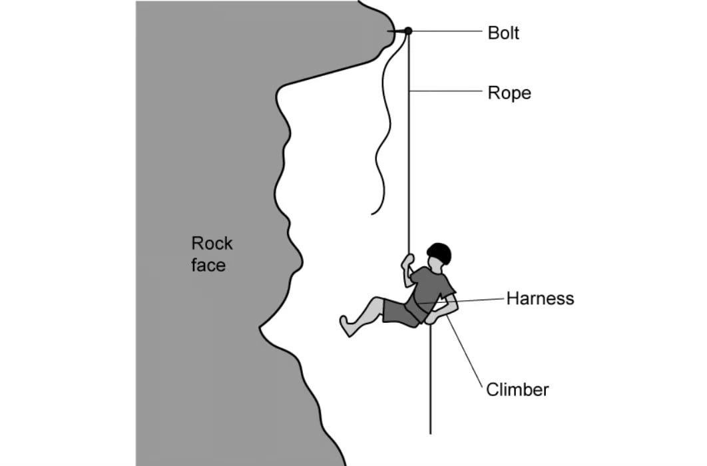
(a) Calculate (i) the resultant force at the lowest point and (ii) rope extension when acceleration is zero. [5 marks]
(b) Calculate maximum speed before the rope begins to stretch and discuss whether a longer rope reduces force. [4 marks]
(c) An \(80\ \mathrm{kg}\) test mass gives return times \(0.664\ \mathrm{s}\) for nylon and \(0.035\ \mathrm{s}\) for hemp. Show the average resultant force for hemp is about 20 times larger. [3 marks]
(d) Explain using force and momentum why nylon is preferred. [4 marks]
Show mark scheme / model answer
(a)
- Maximum extension \(=24-19=5.0\ \mathrm{m}\), so tension \(=kx=560(5)=2800\ \mathrm{N}\).
[2] - Resultant upward force \(=2800-80(9.81)=2015\ \mathrm{N}\approx2020\ \mathrm{N}\).
[1] - At zero acceleration, \(kx=mg\), giving \(x=80(9.81)/560\approx1.4\ \mathrm{m}\).
[2]
(b)
- Before stretching, the climber falls through \(19\ \mathrm{m}\).
[1] - \(v=\sqrt{2g(19)}=19.3\ \mathrm{m\,s^{-1}}\).
[1] - A longer rope gives a longer fall and greater speed before stretching, so the stopping force is greater, not lower.
[2]
(c)
- Nylon: \(F=80(19.3)/0.664\approx2325\ \mathrm{N}\).
[1] - Hemp: \(F=80(19.3)/0.035\approx44\,114\ \mathrm{N}\).
[1] - Ratio \(=44\,114/2325=18.97\approx20\).
[1]
(d)
- Both ropes produce the same momentum change.
[1] - Nylon increases the stopping time.
[1] - Since \(F=\Delta p/\Delta t\), the average force and injury risk are reduced.
[2]
Example 14 · Asteroid collisions · 3.2 SQ Medium Q3
Asteroid A has velocity \(3.61\ \mathrm{km\,s^{-1}}\) and momentum \(2.00\times10^{17}\ \mathrm{kg\,m\,s^{-1}}\). Faster asteroid B becomes embedded in A. B has mass \(6.40\times10^{12}\ \mathrm{kg}\) and velocity \(14.0\ \mathrm{km\,s^{-1}}\).
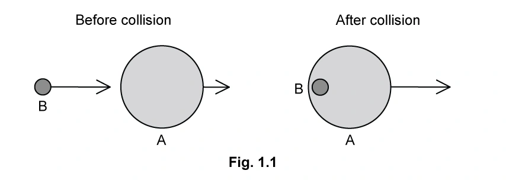
(a) State momentum conservation and show the mass of A is about \(5.5\times10^{13}\ \mathrm{kg}\). [4 marks]
(b) Calculate the combined velocity after collision. [3 marks]
(c) The combined asteroid later collides with stationary asteroid C and the two outgoing asteroids are deflected in different directions. Resolve momentum to show C’s mass is about \(1.0\times10^{13}\ \mathrm{kg}\). [4 marks]
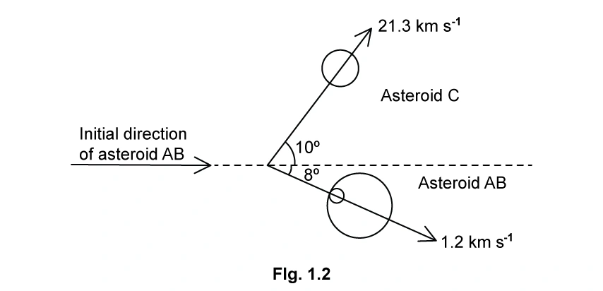
(d) Determine whether the second collision is elastic. [3 marks]
Show mark scheme / model answer
(a)
- Total momentum remains constant provided no resultant external force acts.
[2] - \(m_A=p/v=(2.00\times10^{17})/(3.61\times10^3)=5.54\times10^{13}\ \mathrm{kg}\).
[2]
(b)
- Apply momentum conservation: \[v=\frac{2.00\times10^{17}+(6.40\times10^{12})(14.0\times10^3)}{5.54\times10^{13}+6.40\times10^{12}}.\]
- \(v=4.69\ \mathrm{km\,s^{-1}}\).
[3]
(c)
- Resolve the final momenta horizontally.
[1] - Equate total horizontal momentum before and after.
[2] - \(m_C=1.031\times10^{13}\ \mathrm{kg}\).
[1]
(d)
- Initial kinetic energy \(\approx6.8\times10^{20}\ \mathrm{J}\).
[1] - Final kinetic energy \(\approx2.4\times10^{21}\ \mathrm{J}\).
[1] - Kinetic energy is not conserved, so the collision is inelastic.
[1]
Example 15 · Rifle recoil and stopping force · 3.2 SQ Medium Q5
A shell of mass \(30\ \mathrm{g}\) is fired from a rifle of mass \(1.9\ \mathrm{kg}\). Immediately after firing, the shell has momentum \(36\ \mathrm{kg\,m\,s^{-1}}\).
(a) State the total momentum before firing and give a reason. [2 marks]
(b) Calculate the shell velocity just after firing. [2 marks]
(c) Determine total momentum after firing and the recoil momentum of the rifle. [3 marks]
(d) The shell momentum is \(9.8\ \mathrm{kg\,m\,s^{-1}}\) before hitting a target and it stops in \(4.5\ \mathrm{ms}\). Calculate the average stopping force. [3 marks]
Show mark scheme / model answer
(a)
- Initial total momentum is zero because rifle and shell are both at rest.
[2]
(b)
- Convert \(30\ \mathrm{g}\) to \(0.030\ \mathrm{kg}\).
[1] - \(v=p/m=36/0.030=1200\ \mathrm{m\,s^{-1}}\).
[1]
(c)
- Total momentum after firing remains zero.
[1] - Rifle and shell momenta are equal and opposite.
[1] - Rifle recoil momentum \(=-36\ \mathrm{kg\,m\,s^{-1}}\).
[1]
(d)
- \(\Delta p=9.8\ \mathrm{kg\,m\,s^{-1}}\) and \(\Delta t=4.5\times10^{-3}\ \mathrm{s}\).
[2] - \(F=\Delta p/\Delta t\approx2.2\times10^3\ \mathrm{N}=2.2\ \mathrm{kN}\).
[1]